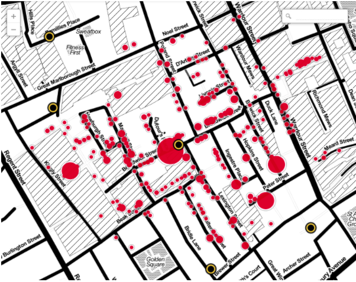
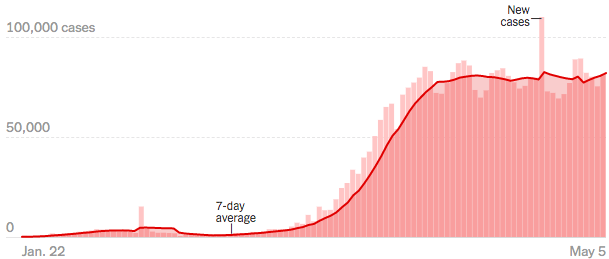
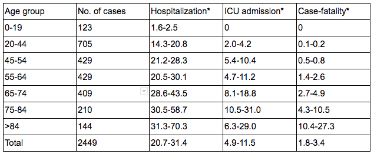
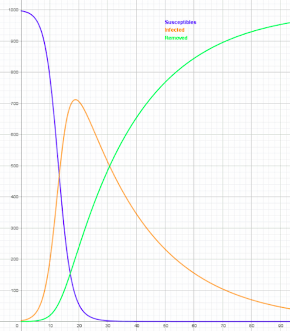
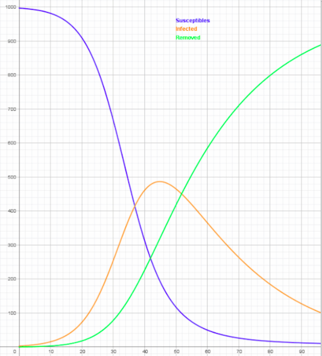
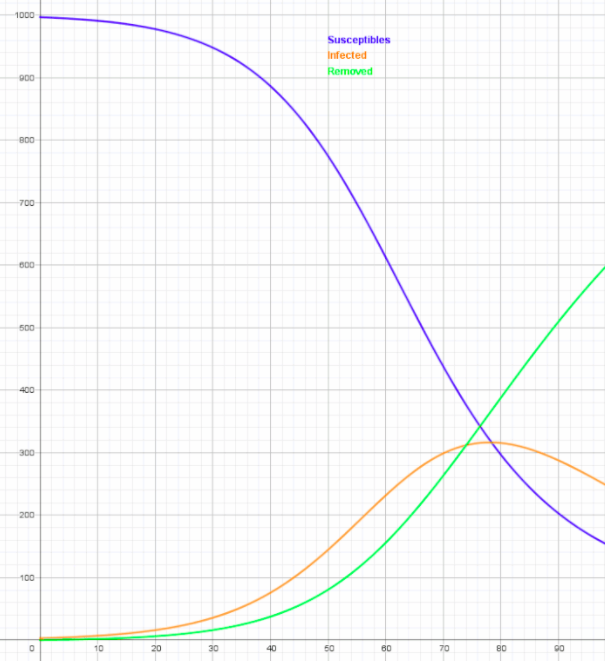
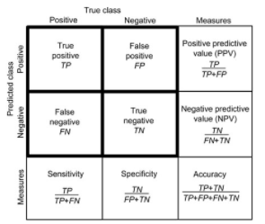

Coronavirus Epidemiology
Introduction
Statistical tests and mathematical modeling are critical components of epidemiology, the study of distribution and the spread of disease in order to control and prevent it. This article will discuss the mathematical aspect of how epidemiologists investigate, measure, model, control, and prevent disease. In particular, this article will examine the COVID-19 pandemic.
Disease Investigation
The first part of managing any epidemic is identifying and discovering it. This part of the process is not something visible to us once the disease has become large-scale because we are long past it. But it is the most important part for small-scale outbreaks and also critical to control and prevention measures for all outbreaks.
Establish Existence of an Outbreak
The first thing that was detected was a cluster of pneumonia cases in Wuhan. A cluster in epidemiology means a large aggregation of cases over a particular period of time. However, a cluster does not necessarily imply an outbreak, the latter being defined as more cases than expected of a disease in a particular period of time. Pneumonia is a condition involving inflammation of the lungs. It can be caused by an infection of any number of different bacteria or viruses. It can sometimes be deadly, especially to those with weakened immune systems who cannot effectively fight the infection. However, pneumonia has a high prevalence (number of cases in the population), with more than 3 million cases annually. To say that the cluster in Wuhan is actually an outbreak epidemiologists need to be sure is not part of the endemic (baseline/expected) prevalence. The reason they knew it was not typical was that the pneumonia was unexplained - not conforming to a known cause such as influenza, rhinoviruses (the common cold), and various bacteria. This means that there was in fact an outbreak, mandating an epidemiological investigation.
Descriptive Epidemiology
Descriptive epidemiology involves describing a disease in terms of person, place, and time. During investigation, all of the unexplained cases of pneumonia were likely tabulated with information such as place of residence and onset of symptoms. Investigating location (places of residence, occupation, etc.) can help determine possible sources. John Snow, the "father of epidemiology," famously plotted cholera cases on a map of London and found they were centered around one water well (this map is shown below, with red dots marking cases and black circles marking wells). Once the well was shut down, the cholera cases ceased, and thus the cause of the outbreak was found. Similarly, considering the area where patients lived in Wuhan could help investigators pinpoint the area where it must have originated, one particular seafood and wet animal market.

Investigating time, we can build out what is known as an "epicurve," or a histogram of all of the cases over time. The length of time between the first case (known as the index case) and the next cluster of cases can help determine the incubation period (time from infection to showing symptoms). The epicurve can also suggest person-to-person spread with multiple successively larger peaks one incubation period apart eventually emerging. The epicurve for COVID-19 is typical for person-to-person spread, and can be seen below with an additional 7-day average line.

Analytic Epidemiology
In the case of COVID-19, descriptive epidemiology established that it spreads between people, and we can begin linking patients to other patients. All of the spread comes from a small number of patients (probably just one) present when the disease jumped from animal to human (it is known as a zoonotic disease because it originates from animals). At this point, we can move on to lab-test patients to identify the new strain. However, not all outbreaks are spread person-to-person. Some have what is known as a common source, like contaminated food or water. In this case, we can perform a case-control trial to investigate possible risk factors and how many people were exposed to them. For example, say a number of people went to a particular restaurant and got sick with a particular gastrointestinal illness. We can build out contingencies and calculate odds ratios for each risk factor (the ratio between the odds that someone got sick given that they had the risk factor vs. that they didn’t).
| Sick | Not Sick | |
|---|---|---|
| Ate Salad | \(30\) | \(20\) |
| Did not eat Salad | \(20\) | \(30\) |
Odds Ratio = \(\frac{30}{20} / \frac{20}{30} = \frac{9}{4}\).
| Sick | Not Sick | |
|---|---|---|
| Ate Lasagna | 10 | 35 |
| Did not eat Lasagna | 40 | 15 |
Odds Ratio = \(\frac{10}{35} / \frac{40}{15} = 3/28\)
| Sick | Not Sick | |
|---|---|---|
| Ate Chicken | \(42\) | \(10\) |
| Did not eat Chicken | \(8\) | \(40\) |
Odds Ratio = \(\frac{42}{10} / \frac{8}{40} = 21\) This appears to suggest that chicken is the most likely factor, and the chicken from the restaurant can go on to be lab-tested for a pathogen. However, note that since the groups of sick and not sick were formed after the fact, they may not be representative of the entire population. Because of this, the study does not prove any causality but merely shows a correlation. For example, the odds ratio is high for people eating salad, but this may just be because many people who ate chicken also ate salad.
Confirm Cause in Lab
Anything suggested by a field investigation or trial should be confirmed by a lab investigation. In the case of coronavirus, a lab investigation can be used to isolate the pathogen from patients. The pathogen itself will be needed to try to find treatments or prevention measures. However, the findings of further epidemiological investigations will be more useful for control measures in the shorter-term.
Measuring the Disease
We know that COVID-19 doesn’t kill a large portion of those it infects, with many carriers not even showing symptoms. However, the virus’s ability to live in hosts without causing symptoms makes it hard to detect. Determining basic mathematical facts about the disease concerning how frequently people show symptoms and how frequently people die are important in understanding it.
Important Values
Infectivity is the ability of a disease to infect a new host. It tells us how many people who come into contact with COVID-19 will become infected. \[\text{Infectivity} = \dfrac{\text{infected}}{\text{susceptible}}\] Pathogenicity is the ability to cause disease. It tells us how many people who become infected with the virus will end up showing symptoms. \[\text{Pathogenicity} = \dfrac{\text{sick}}{\text{infected}}\] Virulence is the ability to cause deaths. It is also known as the Case-Fatality Rate (CFR). It tells us how many people who become sick will end up dying due to the disease.
\[\text{Virulence} = \dfrac{\text{deaths}}{\text{sick}}\]
COVID-19 Pathogenicity
According to a study performed early in the pandemic, \(18\%\) of cases are true asymptomatic cases. This study investigated cases on the Diamond Princess Cruise Ship. If this number were correct, the pathogenicity of COVID-19 would be \(0.82\). This alone could be dangerous if the carriers unknowingly pass on the disease to a number of others. However, more recent studies suggest that there may be a higher proportion of cases which are not symptomatic. A new estimate may be as high as \(78\%\), making the pathogenicity far lower. It is dangerous to have many people not knowing they are sick, because they may not follow the necessary self-quarantine measures. It is even more dangerous not to know how many people are carriers in this way, because then we cannot know how serious the disease is at any given moment.
COVID-19 Case-Fatality Rate
Likely the most important factor to consider for a disease is the Case-Fatality Rate. While a lot of people getting sick is a threat to their ability to work, people dying is clearly far worse. The following table is the result of an analysis performed in early March in an attempt to compute the mortality rate.

* These first numbers are simply totals as of March 5th. † These adjusted numbers only count confirmed cases before February 21st, only count deaths among those with confirmed cases before February 21st. The adjustment of the numbers prevents two mathematical issues. The first is overcounting cases relative to deaths because there are existing cases which will end up as deaths. The second is undercounting cases because there are existing cases which have not yet been discovered. The February 21st date was picked under the assumption that 2 weeks after confirmation of having the disease one would either die or recover. Clearly, none of the rates are the be-all end-all - they wildly vary from each other for a number of reasons. The most important of these reasons is the response of the healthcare system, which was likely poorer among the earliest cases of the disease in each country. This likely inflated the CFR for the whole of China (which includes a large number of the earliest patients in Hubei Province), as well as for the 82 other countries and territories just beginning to experience the disease. Ultimately, this mathematical uncertainty is in fact a positive sign that proper healthcare can improve outcomes.
Age-Specific Case-Fatality Rates
A Centers for Disease Control (CDC) study sheds more light on the situation by breaking the fatality down by age. It found the overall CFR to be about \(2.5\%\), but the age-specific case-fatality rates vary wildly from \(0\%\) to more than \(10\%\). These numbers are important because they help suggest who is most at risk due to the disease. However, they are also from relatively early in the disease so they could be skewed toward having more deaths than will ultimately occur.

*Ranges were determined due to missing data on subjects (these are the maximum and minimum possible percentages given data known).
Modelling Disease Spread
A basic model for the spread of disease is known as the SIR model. SIR stands for susceptible, infected, and recovered. The model relatively simplistically groups everyone into one of these three groups. It treats anyone who died as part of the recovered category - recovered really means that the person is no longer transmitting the disease. The model operates under the assumptions that everyone who has had the disease cannot get it again, and that everyone who hasn’t had the disease is susceptible to getting it. These are reasonable assumptions given that having the disease provides immunity for a long period of time and that a vaccine has not yet been produced.
Maths Behind the Model
The model requires an input of what percentage of the population starts out in each group (\(S\), \(I\), and \(R\)). It also requires an idealized rate of infection (\(r\)) which represents what fraction of the population an infected person would come into contact with over a given period of time (say, a day). Finally, it requires an idealized rate of recovery (\(o\)) which represents the proportion of those infected recovering each day. Then, we can find \(S(t)\), \(I(t)\), \(R(t)\) by solving the following differential equations: \[\frac{dS}{dt} = -rIS\] \[\frac{dI}{dt} = rIS - oI\] \[\frac{dR}{dt} = oI\] In English, this means that the rate of change of \(S\) will be \(-rIS\), the rate of change of \(I\) will be \(rIs - oI\), and the rate of change of \(R\) will be \(oI\). To put it simpler, \(rIS\) represents the portion of the population getting infected each day - each infected person comes into contact with \(r\) of the population each day, but of these only \(S\) of these \(Ir\) encounters are susceptible, so in the end \(rIS\) of the population gets infected each day. Meanwhile, \(oI\) represents the number of people recovering/dying each day - the average length of clinical disease in days will be \(\frac{1}{o}\), and then we say that of those infected \(o\) of them will recover.
Flattening the Curve
Without medication that acts as treatment to make recovery quicker (that is, \(o\) larger), and without vaccination that allows people in the susceptible category to move directly to the recovered/immune category, the only factor we can affect is \(r\). In effect, this means we need to reduce people’s contact with one another. The graphs that follow will show a purple line representing susceptible individuals, an orange line representing infected individuals, and a green ine represenging recovered individuals.

In this first scenario, \(r=0.00049\), which means each person with the disease comes into contact and transmits the disease to thousands of others. This is a disaster scenario, and practically impossible, which results in most of the population being simultaneously infected at one point in time. Clearly, we never are going to have this situation because humans just don’t come into contact with one another this quickly.

In a more plausible yet still very deadly scenario, we can get a flatter curve as shown above. The curve at the left is the \(r = 0.00021\) scenario. This would still be a bad situation because our hospital capacity is not sufficient to hold so much of the world’s population at once. For that reason, we need to reduce the transmission, flattening the curve to the point where everyone can get medical care, and therefore reducing the death rate.

Ultimately, with isolation measures, including those that we are experiencing at the time of writing (late March and April), we can reduce the curve even further. The curve at the right is the \(r = 0.00013\) scenario. This would be a significant improvement, as hospitals may be able to handle the inflow to a better extent. Furthermore, if even better isolation measures are enacted, the purple curve (susceptibles) won’t hit 0, but will flatten out higher. This means that the whole population does not end up having to get it before the disease burns out (tihs will be discussed more later with regards to herd immunity).
Control Measures
In the previous section, I discussed the mathematical efficacy of isolation as a measure to control disease. In this section, I will holistically address a variety of control measures including isolation.
Testing
Generally, screening for the disease and diagnosing patients who have the disease is the first and most important step in controlling disease. To do this, however, we must create a test that accurately and efficiently diagnoses the disease. To provide a bit of scientific background, tests can be looking for the pathogen itself or the antibodies your body produces to fight the pathogen. The former is known as a molecular test - it is more common, and involves a swab of the back of the throat to test for the presence of the infection. The latter is known as a serological test - it is more useful for people with a mild infection with the disease to test their bloodstream for the antibodies as the infection may be hard to detect in their throat.
l0.55 
No matter which type of test, we want maximal accuracy - that is, the test should say whether the patient has or doesn’t have the disease correctly as frequently as possible. However, accuracy is not the only possible measure for a disease. The table at left, is helpful for visualizing how there are a number of different values we are interested in when evaluating a test. We have to be concerned about both false positives and false negatives. Oftentimes, a high accuracy can be misleading. For a rare disease, for example, high accuracy may not mean a high positive predictive value. Say 100 people have the disease and 10000 don’t, and say the test gets 95% of people right. Then, 500 people will be diagnosed with the disease who don’t have it. Meanwhile, 95 people will be diagnosed with the disease who do have it. This ends up meaning false positives can outweigh true positives, making a positive diagnosis less meaningful or useful. On the other hand, for a more common disease like COVID-19, the issue will instead be sensitivity. In particular, we can have a relatively accurate test that still produces a number of false negatives due to how many people have the disease. Any false negatives are an enormous issue as they could spread it to other people unknowingly. In fact, an early COVID-19 test had an issue where a number of false negatives were produced.
Chain of Infection
The transmission chain of infection is the process that begins when an agent leaves its reservoir or former host through a portal of exit, and is conveyed by some mode of transmission, then enters through an appropriate portal of entry to infect a susceptible host. Control measures can be targeted at various points along this chain of infection in particular. The reservoir stage for a person-to-person transmitting disease like COVID-19 is most likely a previous host. Screening, testing, and isolation of those infected are the most important ways to stem further infections. At the mode of transmission stage, we need to disinfection various surfaces and have proper sanitary practices with food and water if the disease is transmitted through such vehicles. This way, the pathogen is unable to move through the environment to another host. Finally, at the susceptible host end of the chain, there are a number of measures to prevent the disease entering the body. This includes quarantine (isolation of healthy people to prevent getting the disease), personal protective equipment (PPE) such as masks and gloves, as well as vaccination when it becomes available. Ultimately, a combination of these strategies in the correct order is most effective to control disease spread.
Prevention Measures
Continuing control measures that help stem the transmission of the disease is also useful for prevention. However, ultimately, the final step in preventing and potentially eradicating a disease is vaccination. Vaccination allows the body to develop a natural and long-lasting immunity to the disease. In a population, there will be a certain number of people who cannot get vaccines due to valid medical concerns. To prevent disease spread, a population simply needs to have a sufficient quantity of the population vaccinated, not necessarily the entire population. This concept, known as herd immunity is explained by the basic reproduction number (\(R_0\)). \(R_0\) represents the average number of people that one person with the disease infects in a population where everyone is susceptible. Of course, this number varies on the individual level based on the amount of contact with others. However, it is a good measure of how easily the disease transmits itself. For example, some of the most disastrously contagious diseases like measles have an \(R_0\) ranging from \(12\) to \(18\), while COVID-19 likely has an \(R_0\) around \(2.6\). People who are immune to the disease decrease the proportion of the population that is susceptible. If \(x\) is the proportion of the population that is susceptible, the effective reproductive number \(R\) can be said to be \(R_0x\). In an idealized model of disease spread, disease will disappear when \(R\) is less than \(1\). This is because the growth rate will be slowing - the number of cases will be in exponential decay, not exponential growth. To achieve \(R \leq 1\), we need a proportion of the population susceptible \(x\) such that \(R_0x \leq 1\), or \(x \leq \frac{1}{R_0}\). This means we need at least \(1 - \frac{1}{R_0}\), or \(\frac{R_0 - 1}{R_0}\), of the population to be immune and/or vaccinated. This is known as the herd immunity threshold, the point at which there are few enough people susceptible that an individual with the disease is not expected to produce at least \(1\) more case. In January, scientists at Imperial College estimated that the \(R_0\) value for COVID-19 was \(2.6\), with a confidence interval of \(1.5\) to \(3.5\). This means we will likely need \(\frac{1.6}{2.6}\), or more than \(60\%\), of the population to either recover from the disease or be vaccinated. Other studies have found numbers even higher than this, as COVID-19 is very variable in its transmissability. The ways COVID-19 will continue to affect us is unpredictable. It is likely not until the development of a vaccine that we will become safe again.
Citations
Conversation, The. “Scientists Find 78% of People Don’t Show Symptoms of Coronavirus - Here’s What That Could Mean.” The Next Web, 14 Apr. 2020,
@DrewQJoseph, Andrew Joseph, et al. “What Do You Call the Disease Caused by the Novel Coronavirus? Covid-19.” STAT, 11 Feb. 2020, www.statnews.com/2020/02/11/disease-caused-by-the-novel-coronavirus-has-name-covid-19/. thenextweb.com/syndication/2020/04/13/scientists-find-78-of-people-dont-show-symptoms-of-coronavirus-heres-what-that-could-mean/.
“Early Release - Case-Fatality Risk Estimates for COVID-19 Calculated by Using a Lag Time for Fatality - Volume 26, Number 6-June 2020 - Emerging Infectious Diseases Journal - CDC.” Centers for Disease Control and Prevention, Centers for Disease Control and Prevention, wwwnc.cdc.gov/eid/article/26/6/20-0320_article.“Mathematical Modelling of Infectious Disease.”
“Estimating the Asymptomatic Proportion of Coronavirus Disease 2019 (COVID-19) Cases on Board the Diamond Princess Cruise Ship, Yokohama, Japan, 2020.” Eurosurveillance, European Centre for Disease Prevention and Control, 12 Mar. 2020, www.eurosurveillance.org/content/10.2807/1560-7917.ES.2020.25.10.2000180.“Report 3 - Transmissibility of 2019-NCoV.”
Imperial College London, www.imperial.ac.uk/mrc-global-infectious-disease-analysis/COVID-19/report-3-transmissibility-of-COVID-19/.
Wikipedia, Wikimedia Foundation, 18 Apr. 2020, en.wikipedia.org/wiki/Mathematical_modelling_of_infectious_disease.Mizumoto, Kenji, et al.